Лучшие консилеры: обзоры и советы визажистов
В этой категории вы найдете обзоры популярных консилеров, сравнение текстур, плотности покрытия и стойкости. Мы рассказываем, какие консилеры лучше скрывают тёмные круги, покраснения и несовершенства, а также делимся советами визажистов по правильному выбору.
Консультации / ЗаписатьсяПопулярные обзоры консилеров
Лучшие консилеры от тёмных кругов
Средства с высокой перекрывающей способностью и лёгкой текстурой.
Лучшие консилеры для жирной кожи
Матирующие формулы с хорошей стойкостью.
Лучшие консилеры для комбинированой кожи
Матирующие формулы с хорошей стойкостью.
Лучшие консилеры для сухой кожи
Увлажняющие текстуры без эффекта сухости.
Лучшие консилеры для чувствительной кожи
Гипоаллергенные формулы без раздражающих компонентов.
Консилеры с лёгким покрытием
Естественный результат для ежедневного макияжа.
Стойкие консилеры
Лучшие варианты для длительного макияжа.
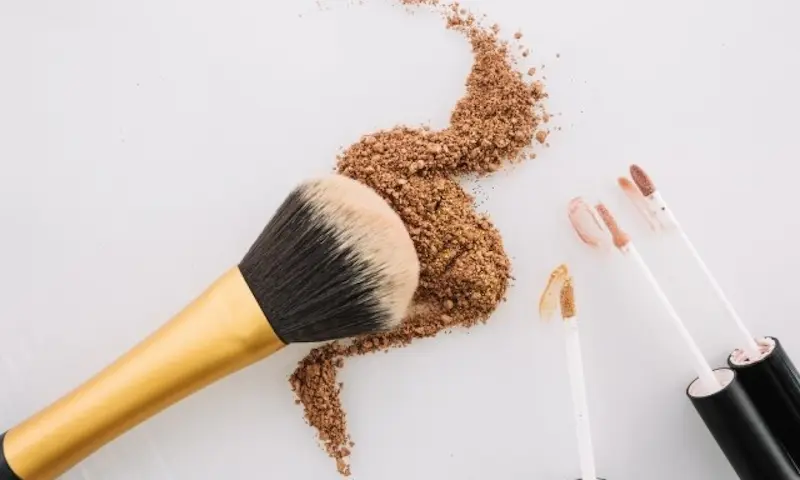
Советы визажистов по нанесению консилера
Правильное нанесение консилера помогает скрыть тёмные круги, покраснения и другие несовершенства кожи. Визажисты рекомендуют учитывать текстуру средства, тип кожи и способ растушёвки.
Наносите на увлажнённую кожу
Перед нанесением консилера используйте лёгкий крем для области вокруг глаз. Это помогает избежать сухости и делает покрытие более естественным.
Используйте небольшое количество
Слишком большое количество средства может подчеркнуть морщинки. Лучше наносить консилер тонким слоем и постепенно усиливать покрытие.
Растушёвывайте мягко
Для естественного результата визажисты рекомендуют растушёвывать консилер спонжем или кистью лёгкими похлопывающими движениями.
Выбирайте правильный оттенок
Для маскировки тёмных кругов выбирайте консилер на один тон светлее кожи. Для покраснений лучше подойдёт оттенок, максимально близкий к цвету лица.
Как выбрать консилер
При выборе консилера важно учитывать проблему кожи, текстуру средства и тип кожи. Правильно подобранный консилер помогает скрыть тёмные круги, покраснения и другие несовершенства.
Нужен профессиональный макияж?
Если вы хотите подобрать идеальный тон или сделать профессиональный макияж, обратитесь к визажисту.
Посмотреть услуги визажистов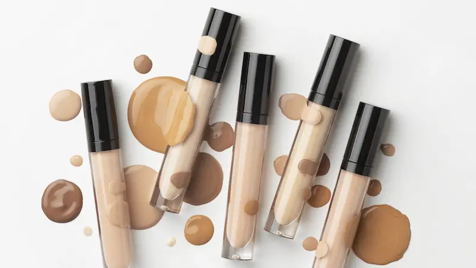
Лучшие консилеры от тёмных кругов под глазами
Консилеры для зоны под глазами должны иметь лёгкую текстуру и хорошие увлажняющие свойства. Они помогают скрыть тёмные круги, освежают взгляд и не подчеркивают мелкие морщины. Лучше выбирать формулы с увлажняющими компонентами и светоотражающими частицами.
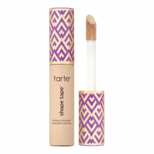
Плотное покрытие и высокая стойкость
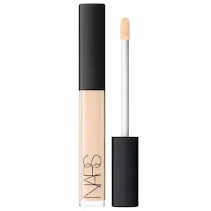
Освежает взгляд и хорошо перекрывает тёмные круги
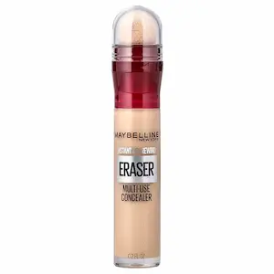
Популярный консилер для зоны под глазами
| Консилер | Особенности |
|---|---|
|
Tarte Shape Tape
Плотное покрытие, хорошо маскирует тёмные круги и несовершенства. Подходит для стойкого макияжа и профессионального использования. |
Высокое покрытие и стойкость |
|
NARS Radiant Creamy Concealer
Кремовая текстура, легко растушевывается и придаёт зоне под глазами более свежий и сияющий вид. |
Натуральный финиш и комфорт |
|
Maybelline Instant Age Rewind
Лёгкая формула с удобным аппликатором, помогает визуально осветлить область под глазами. |
Осветляет и освежает взгляд |
Лучшие консилеры для жирной кожи
Для жирной кожи важно выбирать консилеры с матирующим эффектом и стойкой формулой. Такие средства помогают скрыть несовершенства, контролируют блеск и сохраняют аккуратный макияж в течение дня. Предпочтительны лёгкие текстуры, которые не забивают поры и хорошо держатся даже в жаркую погоду.
Плотное покрытие и высокая стойкость
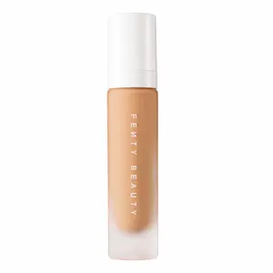
Матирующий эффект и лёгкая текстура
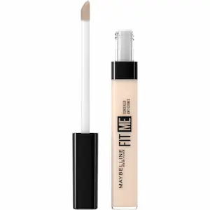
Лёгкая формула для ежедневного макияжа
| Консилер | Особенности |
|---|---|
|
Tarte Shape Tape
Очень стойкий консилер с плотным покрытием. Хорошо маскирует несовершенства и подходит для жирной кожи благодаря длительной стойкости. |
Плотное покрытие и высокая стойкость |
|
Fenty Beauty Pro Filt’r Concealer
Матирующая формула, которая помогает контролировать блеск и создаёт аккуратный макияж на протяжении всего дня. |
Матирующий эффект |
|
Maybelline Fit Me Concealer
Лёгкий консилер с натуральным финишем. Хорошо подходит для ежедневного макияжа и не перегружает кожу. |
Натуральный финиш |
Лучшие консилеры для комбинированной кожи
Комбинированная кожа требует баланса между лёгкостью и стойкостью косметики. Консилер должен хорошо скрывать несовершенства, не пересушивать область под глазами и при этом не усиливать жирный блеск в Т-зоне. Оптимально подходят кремовые формулы со средней плотностью покрытия.
Кремовая текстура и естественный финиш
Лёгкая формула для ежедневного макияжа

Натуральный эффект и комфорт для кожи
| Консилер | Особенности |
|---|---|
|
NARS Radiant Creamy Concealer
Один из самых популярных консилеров с кремовой текстурой. Хорошо скрывает несовершенства и придаёт коже свежий вид. |
Натуральный финиш и среднее покрытие |
|
Maybelline Fit Me Concealer
Лёгкий консилер, который не перегружает кожу и подходит для повседневного макияжа. |
Лёгкая текстура |
|
Clinique Even Better Concealer
Комфортная формула, которая помогает скрыть тёмные круги и несовершенства, не пересушивая кожу. |
Комфортное покрытие |
Лучшие консилеры для чувствительной кожи
Для чувствительной кожи важно выбирать гипоаллергенные консилеры без агрессивных компонентов и сильных ароматизаторов. Такие средства помогают скрыть покраснения и несовершенства, не вызывая раздражения и дискомфорта.
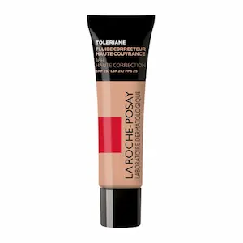
Подходит для чувствительной кожи
Гипоаллергенная формула
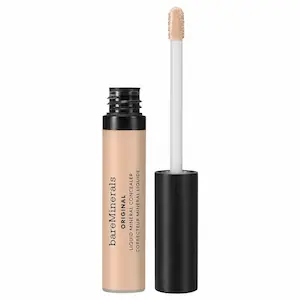
Минеральная формула
| Консилер | Особенности |
|---|---|
|
La Roche-Posay Toleriane
Гипоаллергенная формула, разработанная для чувствительной кожи. Хорошо маскирует покраснения и несовершенства. |
Подходит для чувствительной кожи |
|
Clinique Even Better
Лёгкая формула без раздражающих компонентов. Подходит для ежедневного макияжа. |
Гипоаллергенная формула |
|
bareMinerals Concealer
Минеральная формула с мягким покрытием, которая не раздражает кожу. |
Минеральный состав |
Лучшие консилеры с лёгким покрытием
Консилеры с лёгким покрытием идеально подходят для естественного макияжа. Они помогают слегка выровнять тон кожи, освежить область под глазами и скрыть небольшие несовершенства без плотного слоя.
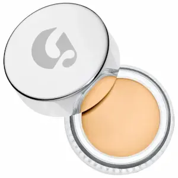
Естественный эффект
Лёгкая текстура
Натуральный финиш
| Консилер | Особенности |
|---|---|
|
Glossier Stretch
Лёгкая кремовая текстура, создаёт очень естественный эффект. |
Натуральное покрытие |
|
Maybelline Fit Me
Лёгкий консилер для ежедневного макияжа. |
Лёгкая формула |
|
NARS Radiant Creamy
Освежает кожу и придаёт естественное сияние. |
Натуральный финиш |
Лучшие стойкие консилеры
Стойкие консилеры подходят для долгого дня, мероприятий и профессионального макияжа. Они обеспечивают хорошее покрытие, не скатываются и сохраняют аккуратный вид макияжа на протяжении многих часов.
Очень стойкая формула
Долгая стойкость
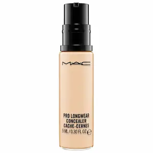
Профессиональная стойкость
| Консилер | Особенности |
|---|---|
|
Tarte Shape Tape
Один из самых известных стойких консилеров с плотным покрытием. |
Очень высокая стойкость |
|
Fenty Pro Filt’r
Матирующий консилер с длительным эффектом. |
Матирующая формула |
|
MAC Pro Longwear
Профессиональный консилер, который держится весь день. |
Долгая стойкость |
Лучшие консилеры для сухой кожи
Для сухой кожи важно выбирать консилеры с увлажняющими компонентами, чтобы избежать стянутости и подчеркнутых сухих участков. Идеальны средства с кремовой текстурой и дополнительным питанием кожи.
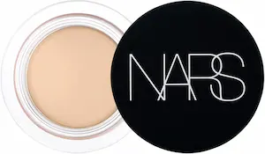
Увлажняет и выравнивает тон кожи

Кремовая текстура, комфортное покрытие
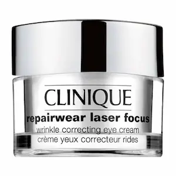
Лёгкое увлажняющее покрытие
| Консилер | Особенности |
|---|---|
|
NARS Soft Matte
Кремовая текстура, увлажняет сухую кожу, скрывает несовершенства, не подчеркивает шелушения. |
Увлажнение и выравнивание тона |
|
IT Cosmetics Your Skin But Better
Обеспечивает комфортное кремовое покрытие, подходит для сухой кожи и маскирует темные круги. |
Кремовая текстура |
|
Clinique Repairwear
Лёгкое увлажняющее средство, не сушит кожу, создаёт натуральный вид. |
Лёгкое увлажняющее покрытие |
Частые ошибки при использовании консилера
Следуя этим советам и правильно подбирая текстуру и оттенок, вы сможете добиться ровного и естественного покрытия.
Часто задаваемые вопросы о консилерах
Как выбрать правильный оттенок консилера?
Тестируйте консилер при дневном освещении на области под глазами или на линии подбородка. Идеальный оттенок должен слегка светлее вашей кожи для маскировки темных кругов.
Можно ли использовать консилер каждый день?
Да, если средство подходит вашему типу кожи и не вызывает раздражения. Важно снимать макияж в конце дня и поддерживать увлажнение кожи.
Где лучше наносить консилер?
Основные зоны: под глазами, на покраснения, прыщики и пигментные пятна. Растушевывайте средство лёгкими движениями пальцев или спонжем.
Можно ли использовать консилер для скульптурирования лица?
Да, более светлые оттенки помогают выделить зоны, а тёмные — создать тени. Главное — тщательно растушевывать для естественного эффекта.